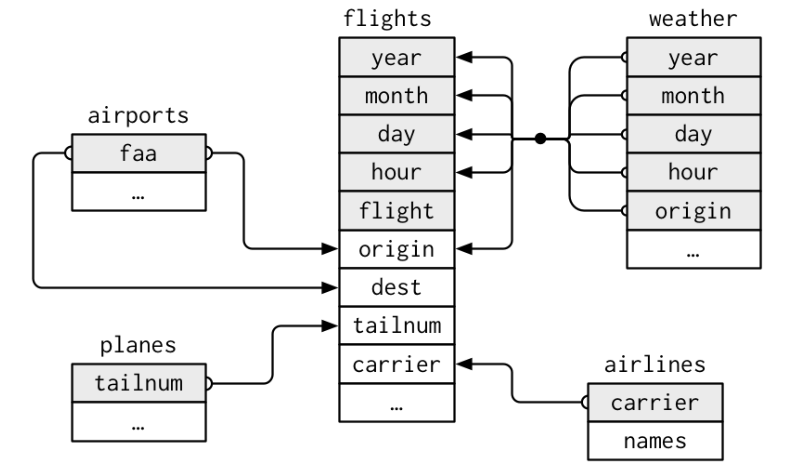

The package dplyr was written by the most popular R programmer Hadley Wickham who has written many useful R packages.
The package contains a set of functions (or “verbs”) that perform common data manipulation operations such as filtering for rows, selecting specific columns, re-ordering rows, adding new columns and summarizing data.
Hence, it is called a grammar of data manipulation.
To understand these functions, we use the starwars data set in the dplyr package:
library(dplyr)library(tibble)as_tibble(starwars)
# A tibble: 87 x 14
name height mass hair_~1 skin_~2 eye_c~3 birth~4 sex gender homew~5
<chr> <int> <dbl> <chr> <chr> <chr> <dbl> <chr> <chr> <chr>
1 Luke Skywa~ 172 77 blond fair blue 19 male mascu~ Tatooi~
2 C-3PO 167 75 <NA> gold yellow 112 none mascu~ Tatooi~
3 R2-D2 96 32 <NA> white,~ red 33 none mascu~ Naboo
4 Darth Vader 202 136 none white yellow 41.9 male mascu~ Tatooi~
5 Leia Organa 150 49 brown light brown 19 fema~ femin~ Aldera~
6 Owen Lars 178 120 brown,~ light blue 52 male mascu~ Tatooi~
7 Beru White~ 165 75 brown light blue 47 fema~ femin~ Tatooi~
8 R5-D4 97 32 <NA> white,~ red NA none mascu~ Tatooi~
9 Biggs Dark~ 183 84 black light brown 24 male mascu~ Tatooi~
10 Obi-Wan Ke~ 182 77 auburn~ fair blue-g~ 57 male mascu~ Stewjon
# ... with 77 more rows, 4 more variables: species <chr>, films <list>,
# vehicles <list>, starships <list>, and abbreviated variable names
# 1: hair_color, 2: skin_color, 3: eye_color, 4: birth_year, 5: homeworld
# i Use `print(n = ...)` to see more rows, and `colnames()` to see all variable names
Data manipulation with dplyr
Now we select the data related to species Droid using filter() function as below:
# A tibble: 6 x 14
name height mass hair_color skin_color eye_c~1 birth~2 sex gender homew~3
<chr> <int> <dbl> <chr> <chr> <chr> <dbl> <chr> <chr> <chr>
1 C-3PO 167 75 <NA> gold yellow 112 none mascu~ Tatooi~
2 R2-D2 96 32 <NA> white, bl~ red 33 none mascu~ Naboo
3 R5-D4 97 32 <NA> white, red red NA none mascu~ Tatooi~
4 IG-88 200 140 none metal red 15 none mascu~ <NA>
5 R4-P17 96 NA none silver, r~ red, b~ NA none femin~ <NA>
6 BB8 NA NA none none black NA none mascu~ <NA>
# ... with 4 more variables: species <chr>, films <list>, vehicles <list>,
# starships <list>, and abbreviated variable names 1: eye_color,
# 2: birth_year, 3: homeworld
# i Use `colnames()` to see all variable names
Data manipulation with dplyr
Now we use select() function to select some specific variables.
starwars %>%select(name, ends_with("color"))
# A tibble: 87 x 4
name hair_color skin_color eye_color
<chr> <chr> <chr> <chr>
1 Luke Skywalker blond fair blue
2 C-3PO <NA> gold yellow
3 R2-D2 <NA> white, blue red
4 Darth Vader none white yellow
5 Leia Organa brown light brown
6 Owen Lars brown, grey light blue
7 Beru Whitesun lars brown light blue
8 R5-D4 <NA> white, red red
9 Biggs Darklighter black light brown
10 Obi-Wan Kenobi auburn, white fair blue-gray
# ... with 77 more rows
# i Use `print(n = ...)` to see more rows
Data manipulation with dplyr
To create a new variable called bmi using the existing variables mass and height, we use mutate() function, and select some specific variables.
# A tibble: 87 x 4
name height mass bmi
<chr> <int> <dbl> <dbl>
1 Luke Skywalker 172 77 26.0
2 C-3PO 167 75 26.9
3 R2-D2 96 32 34.7
4 Darth Vader 202 136 33.3
5 Leia Organa 150 49 21.8
6 Owen Lars 178 120 37.9
7 Beru Whitesun lars 165 75 27.5
8 R5-D4 97 32 34.0
9 Biggs Darklighter 183 84 25.1
10 Obi-Wan Kenobi 182 77 23.2
# ... with 77 more rows
# i Use `print(n = ...)` to see more rows
Data manipulation with dplyr
Use arrange() function to arrange the variable mass in ascending order as arrange(mass), and to arrange in descending order, use arrange(desc(mass)) as below:
starwars %>%arrange(desc(mass))
# A tibble: 87 x 14
name height mass hair_~1 skin_~2 eye_c~3 birth~4 sex gender homew~5
<chr> <int> <dbl> <chr> <chr> <chr> <dbl> <chr> <chr> <chr>
1 Jabba Desi~ 175 1358 <NA> green-~ orange 600 herm~ mascu~ Nal Hu~
2 Grievous 216 159 none brown,~ green,~ NA male mascu~ Kalee
3 IG-88 200 140 none metal red 15 none mascu~ <NA>
4 Darth Vader 202 136 none white yellow 41.9 male mascu~ Tatooi~
5 Tarfful 234 136 brown brown blue NA male mascu~ Kashyy~
6 Owen Lars 178 120 brown,~ light blue 52 male mascu~ Tatooi~
7 Bossk 190 113 none green red 53 male mascu~ Trando~
8 Chewbacca 228 112 brown unknown blue 200 male mascu~ Kashyy~
9 Jek Tono P~ 180 110 brown fair blue NA male mascu~ Bestin~
10 Dexter Jet~ 198 102 none brown yellow NA male mascu~ Ojom
# ... with 77 more rows, 4 more variables: species <chr>, films <list>,
# vehicles <list>, starships <list>, and abbreviated variable names
# 1: hair_color, 2: skin_color, 3: eye_color, 4: birth_year, 5: homeworld
# i Use `print(n = ...)` to see more rows, and `colnames()` to see all variable names
Data manipulation with dplyr
Now, we use summarise() function to get some summaries of data.
# A tibble: 8 x 3
species n mean_mass
<chr> <int> <dbl>
1 Droid 6 69.8
2 Gungan 3 74
3 Human 35 82.8
4 Kaminoan 2 88
5 Mirialan 2 53.1
6 Twi'lek 2 55
7 Wookiee 2 124
8 Zabrak 2 80
Class works
The sampledata.csv contains income generated by states in USA from year 2002 to 2015. Download the data set by clicking on this link - Dataset and then right click and hit Save as option.
(a) Selects variables from “Index” to “Y2006”.
(b) Drop variables “Index”, and “State” variables from data.
(c) Filter rows in which Index is equal to A.
(d) Filter rows having ‘A’ and ‘C’ in column ‘Index’.
(e) Filter rows ‘A’ and ‘C’ from ‘Index’ and income greater than 1.2 million in Year 2006.
(f) Filter rows ‘A’ and ‘C’ from ‘Index’ or income greater than 1.2 million in Year 2006.
(g) Find the mean and median for the variable Y2012.
(h) Find mean and median of Y2011 and Y2012.
(i) Arrange variable Y2011 by variable Index in ascending order.
(j) Calculate count and mean of variables Y2011 and Y2012 by variable Index.
(k) Calculate the variable rate=Y2011/Y2012.
(l) Calculate the cumulative sum of Y2011 and assign it to total, and select variables index, Y2011 and total.
Class works
library(readr)mydata=read_csv("C:/D/Lecture Notes/Multivariate methods/categorical data analysis/lecture9/sampledata.csv")library(tibble)mydata=as.tibble(mydata)mydata
# A tibble: 51 x 16
Index State Y2002 Y2003 Y2004 Y2005 Y2006 Y2007 Y2008 Y2009 Y2010
<chr> <chr> <dbl> <dbl> <dbl> <dbl> <dbl> <dbl> <dbl> <dbl> <dbl>
1 A Alabama 1.30e6 1.32e6 1.12e6 1.49e6 1.11e6 1.44e6 1.95e6 1.94e6 1.24e6
2 A Alaska 1.17e6 1.96e6 1.82e6 1.45e6 1.86e6 1.47e6 1.55e6 1.44e6 1.63e6
3 A Arizona 1.74e6 1.97e6 1.38e6 1.78e6 1.10e6 1.11e6 1.75e6 1.55e6 1.30e6
4 A Arkansas 1.49e6 1.99e6 1.12e6 1.95e6 1.67e6 1.80e6 1.19e6 1.63e6 1.67e6
5 C Califor~ 1.69e6 1.68e6 1.89e6 1.48e6 1.74e6 1.81e6 1.49e6 1.66e6 1.62e6
6 C Colorado 1.34e6 1.88e6 1.89e6 1.24e6 1.87e6 1.81e6 1.88e6 1.75e6 1.91e6
7 C Connect~ 1.61e6 1.23e6 1.18e6 1.52e6 1.84e6 1.98e6 1.76e6 1.97e6 1.97e6
8 D Delaware 1.33e6 1.27e6 1.71e6 1.40e6 1.44e6 1.30e6 1.76e6 1.55e6 1.37e6
9 D Distric~ 1.11e6 1.99e6 1.37e6 1.83e6 1.80e6 1.60e6 1.19e6 1.74e6 1.71e6
10 F Florida 1.96e6 1.47e6 1.42e6 1.36e6 1.34e6 1.28e6 1.76e6 1.82e6 1.20e6
# ... with 41 more rows, and 5 more variables: Y2011 <dbl>, Y2012 <dbl>,
# Y2013 <dbl>, Y2014 <dbl>, Y2015 <dbl>
# i Use `print(n = ...)` to see more rows, and `colnames()` to see all variable names
(a) Selects variables “Index” to “Y2006”.
library(dplyr)mydata %>%select (Index:Y2006)
# A tibble: 51 x 7
Index State Y2002 Y2003 Y2004 Y2005 Y2006
<chr> <chr> <dbl> <dbl> <dbl> <dbl> <dbl>
1 A Alabama 1296530 1317711 1118631 1492583 1107408
2 A Alaska 1170302 1960378 1818085 1447852 1861639
3 A Arizona 1742027 1968140 1377583 1782199 1102568
4 A Arkansas 1485531 1994927 1119299 1947979 1669191
5 C California 1685349 1675807 1889570 1480280 1735069
6 C Colorado 1343824 1878473 1886149 1236697 1871471
7 C Connecticut 1610512 1232844 1181949 1518933 1841266
8 D Delaware 1330403 1268673 1706751 1403759 1441351
9 D District of Columbia 1111437 1993741 1374643 1827949 1803852
10 F Florida 1964626 1468852 1419738 1362787 1339608
# ... with 41 more rows
# i Use `print(n = ...)` to see more rows
(b) Drop variables “Index”, and “State” variables from data.
# A tibble: 19 x 4
Index n mean2011 mean2012
<chr> <int> <dbl> <dbl>
1 A 4 1432642. 1455876
2 C 3 1750357 1547326
3 D 2 1336059 1981868.
4 F 1 1497051 1131928
5 G 1 1851245 1850111
6 H 1 1902816 1695126
7 I 4 1690170. 1687056.
8 K 2 1489353 1899772.
9 L 1 1210385 1234234
10 M 8 1582714. 1586091.
11 N 8 1448351. 1470316.
12 O 3 1882111. 1602463.
13 P 1 1483292 1290329
14 R 1 1781016 1909119
15 S 2 1381724 1671744
16 T 2 1724080. 1865786.
17 U 1 1288285 1108281
18 V 2 1482143 1488651
19 W 4 1711341. 1660192.
(k) Calculate the variable rate=Y2011/Y2012.
library(dplyr)mydata %>%mutate(rate=Y2011/Y2012)
# A tibble: 51 x 17
Index State Y2002 Y2003 Y2004 Y2005 Y2006 Y2007 Y2008 Y2009 Y2010
<chr> <chr> <dbl> <dbl> <dbl> <dbl> <dbl> <dbl> <dbl> <dbl> <dbl>
1 A Alabama 1.30e6 1.32e6 1.12e6 1.49e6 1.11e6 1.44e6 1.95e6 1.94e6 1.24e6
2 A Alaska 1.17e6 1.96e6 1.82e6 1.45e6 1.86e6 1.47e6 1.55e6 1.44e6 1.63e6
3 A Arizona 1.74e6 1.97e6 1.38e6 1.78e6 1.10e6 1.11e6 1.75e6 1.55e6 1.30e6
4 A Arkansas 1.49e6 1.99e6 1.12e6 1.95e6 1.67e6 1.80e6 1.19e6 1.63e6 1.67e6
5 C Califor~ 1.69e6 1.68e6 1.89e6 1.48e6 1.74e6 1.81e6 1.49e6 1.66e6 1.62e6
6 C Colorado 1.34e6 1.88e6 1.89e6 1.24e6 1.87e6 1.81e6 1.88e6 1.75e6 1.91e6
7 C Connect~ 1.61e6 1.23e6 1.18e6 1.52e6 1.84e6 1.98e6 1.76e6 1.97e6 1.97e6
8 D Delaware 1.33e6 1.27e6 1.71e6 1.40e6 1.44e6 1.30e6 1.76e6 1.55e6 1.37e6
9 D Distric~ 1.11e6 1.99e6 1.37e6 1.83e6 1.80e6 1.60e6 1.19e6 1.74e6 1.71e6
10 F Florida 1.96e6 1.47e6 1.42e6 1.36e6 1.34e6 1.28e6 1.76e6 1.82e6 1.20e6
# ... with 41 more rows, and 6 more variables: Y2011 <dbl>, Y2012 <dbl>,
# Y2013 <dbl>, Y2014 <dbl>, Y2015 <dbl>, rate <dbl>
# i Use `print(n = ...)` to see more rows, and `colnames()` to see all variable names
(l) Calculate the cumulative sum of Y2011 and assign it to total, and select variables index, Y2011 and total.
# A tibble: 51 x 3
Index Y2011 total
<chr> <dbl> <dbl>
1 A 1440756 1440756
2 A 1230866 2671622
3 A 1130709 3802331
4 A 1928238 5730569
5 C 1639670 7370239
6 C 1665877 9036116
7 C 1945524 10981640
8 D 1318669 12300309
9 D 1353449 13653758
10 F 1497051 15150809
# ... with 41 more rows
# i Use `print(n = ...)` to see more rows
Relational data
Suppose we have created data tables which are related to each other. These type of data tables are called relational data. When working with relational data we may want to combine information from different data tables. That can be done in different ways using dplyr package.
This concept is similar to the relational database management system (or RDBMS) using SQL. Using R, we can do this by using dplyr package, which is somewhat easier to use than SQL, since dplyr is specialised to do data analysis.
Relational data
We have already worked with flights data table in nycflights13 package. In the same package, there are 4 other tibbles (airlines, airports, planes, weather) which are related with flights data table.

Relational data
flights connects to planes via tailnum variable.
flights connects to airlines via carrier variable.
flights connects to airports via the origin and dest variables.
flights connects to weather via origin, year, month, day and hour variables.
# Check variables in each tibblelibrary(tidyverse)library(nycflights13)flightsairlinesairportsplanesweather
Relational data
To connect each pair of tables we use unique identifiers called keys.
primary key - uniquely identifies an observation in its own table.
foreign key - uniquely identifies an observation in another table.
A variable can be both a primary key and a foreign key.
A primary key and the corresponding foreign key in another table form a relation
Relations are typically one-to-many.
Relational data
Use dm package to get some details about the data set.
Then, to add the full airline name, we combine the airlines and flights2 data tables using left_join() function.
flights2 %>%left_join(airlines, by ="carrier")
Refer more details: https://r4ds.had.co.nz/relational-data.html
Relational data
Suppose we have two data tables x and y.
inner_join(x,y) - keeps observations common to xand y.
left_join(x,y) - keeps all observations in x.
right_join(x,y) - keeps all observations in y.
full_join(x,y) - keeps all observations in x and y.
semi_join(x, y) - keeps all observations in x that have a match in y.
anti_join(x, y) - drops all observations in x that have a match in y.
Class work
Create two data sets student_residence and student_transport as below:
# Creating student_residence data setset.seed(123)student_residence <-data.frame(student =seq(1, 6),distance =runif(6, 3, 10))# Creating student_transport data set student_transport <-data.frame(student =seq(1, 7, by =2),transport =c("Bus", "Carpool", "Walk", "Bus"))
Using dplyr package, apply inner_join(), left_join(), right_join() and full_join() to the above data sets, and interpret the results.
Must learn
Modeling Relational Data in R with ReDaMoR: https://cran.r-project.org/web/packages/ReDaMoR/vignettes/ReDaMoR.html#1_Introduction
The datamodelr R package provides tools to document relational data.
Importing data from Relational Databases: https://www.projectpro.io/data-science-in-r-programming-tutorial/r-tutorial-importing-data-from-relational-database
More Details
Data Carpentry, 2017-2018, dplyr package, https://datacarpentry.org/R-genomics/04-dplyr.html#data_manipulation_using_dplyr